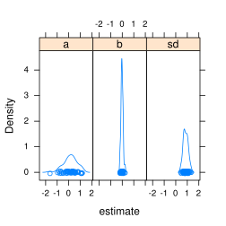

13 Simulation
When building models in TMB it is generally recommended to test the implementation on simulated data. Obviously, data can be simulated from R and passed to the C++ template. In practice this amounts to implementing the model twice and is thus a strong way to validate the implementation of the model. However, with increased model complexity it becomes inconvenient to maintain two separate implementations. Therefore, TMB allows the the user to write the simulation code as an integrated part of the C++ model template.
13.1 Overview of simulation methods in TMB
13.1.1 Standard generators
The TMB simulation routines use the same naming convention as the R
simulators. For instance rnorm() is used to simulate from a normal
distribution. However, the argument convention is slightly
different:
rnorm(n, mu, sd)drawsnsimulations from a normal distribution. Unlike R this works for scalar parameters only.rnorm(mu, sd)is a TMB specific variant that works for mixed scalar and vector input. Output length follows the length of the longest input (no re-cycling) hence is consistent withdnorm(mu, sd).
Currently the following simulators are implemented:
rnorm(),rpois(),runif(),rbinom(),rgamma(),rexp(),rbeta(),rf(),rlogis(),rt(),rweibull(),rcompois(),rtweedie(),rnbinom(),rnbinom2()
13.1.2 Generators for density objects
Objects from the density namespace have their own simulate()
method. Taking the multivariate normal distribution as example we have
the following ways to draw a simulation:
MVNORM(Sigma).simulate()returns a vector with a simulation from the multivariate normal distribution. The void argument version is only available when there is no ambiguity in the dimension of the output. In theMVNORMcase the dimension of the output is known from the dimension ofSigma. In other cases e.g.AR1(phi)the dimension of the output is not known hence the void argument version is not available.MVNORM(Sigma).simulate(x)passxby reference and writes the simulation directly toxwithout returning anything. This version is available for all the classes because the dimension of the simulation can always be deduced fromx.
13.2 Simulation blocks
Simulation functions can be called from anywhere in the C++ program. However, usually one should put the simulation code inside specialized simulation blocks that allows the code to only be executed when requested from R.
13.2.1 A linear regression example
A complete example extending the example linreg.cpp with simulation code is:
#include <TMB.hpp>
template<class Type>
Type objective_function<Type>::operator() ()
{
DATA_VECTOR(y);
DATA_VECTOR(x);
PARAMETER(a);
PARAMETER(b);
PARAMETER(sd);
vector<Type> mu = a + b * x;
Type nll = -sum(dnorm(y, mu, sd, true));
SIMULATE {
y = rnorm(mu, sd); // Simulate response
REPORT(y); // Report the simulation
}
return nll;
}The
SIMULATEblock marks the simulation and is not executed by default.
We compile the C++-file and the model object is constructed as usual:
obj <- MakeADFun(data, parameters, DLL="linreg")Now a simulation can be generated with
set.seed(1) ## optional
obj$simulate()## $y
## [1] -0.6264538 0.1836433 -0.8356286 1.5952808 0.3295078 -0.8204684
## [7] 0.4874291 0.7383247 0.5757814 -0.3053884This only includes the simulated response - not the rest of the data. A complete dataset can be generated by:
set.seed(1) ## optional - Note: same y as previous
obj$simulate(complete=TRUE)## $y
## [1] -0.6264538 0.1836433 -0.8356286 1.5952808 0.3295078 -0.8204684
## [7] 0.4874291 0.7383247 0.5757814 -0.3053884
##
## $x
## [1] 1 2 3 4 5 6 7 8 9 10
##
## attr(,"check.passed")
## [1] TRUEHere we did not explicitely state the parameter values to use with the
simulation. The simulate method takes an additional argument par
that can be used for this.
The default parameter values used for the simulation is
obj$env$last.par.
13.2.2 A simulation study
Simulating datasets from known parameters and re-estimationg those parameters can be done generically by:
sim <- replicate(50, {
simdata <- obj$simulate(par=obj$par, complete=TRUE)
obj2 <- MakeADFun(simdata, parameters, DLL="linreg", silent=TRUE)
nlminb(obj2$par, obj2$fn, obj2$gr)$par
})We reshape and plot the result:
library(lattice)
df <- data.frame(estimate=as.vector(sim), parameter=names(obj$par)[row(sim)])
densityplot( ~ estimate | parameter, data=df, layout=c(3,1))
Compare with the true parameter values of the simulation:
obj$par## a b sd
## 0 0 113.2.3 Advanced examples
The examples sam.cpp and ar1_4D.cpp includes more advanced simulation code. The latter demonstrates how to simulate from the density objects:
// Separable covariance on 4D lattice with AR1 structure in each direction.
#include <TMB.hpp>
/* Parameter transform */
template <class Type>
Type f(Type x){return Type(2)/(Type(1) + exp(-Type(2) * x)) - Type(1);}
template<class Type>
Type objective_function<Type>::operator() ()
{
DATA_VECTOR(N)
PARAMETER_ARRAY(eta);
PARAMETER(transf_phi); /* fastest running dim */
Type phi=f(transf_phi);
ADREPORT(phi);
using namespace density;
Type res=0;
res+=AR1(phi,AR1(phi,AR1(phi,AR1(phi))))(eta);
// logdpois = N log lam - lam
for(int i=0;i<N.size();i++)res-=N[i]*eta[i]-exp(eta[i]);
SIMULATE {
AR1(phi,AR1(phi,AR1(phi,AR1(phi)))).simulate(eta);
vector<Type> lam = exp(eta);
N = rpois(lam);
REPORT(eta);
REPORT(N);
}
return res;
}In this example the 4D-array eta is passed to the simulator by
reference. Thereby the simulator knows the dimension of eta and can
fill eta with a simulation.
13.2.4 Further notes
The above example only used one simulation block. In general there is no limitation on the number of simulation blocks that can be used in a model and simulation blocks can use temporaries calculated outside the blocks (as demonstrated in the linear regression example). For clarity reasons, it is often a good idea to add a simulation block after each likelihood contribution. However, note that simulation blocks are in general not commutative (unlike likelihood accumulation). It is therefore further recommended to add likelihood contributions of random effects in the natural hierarchical order.